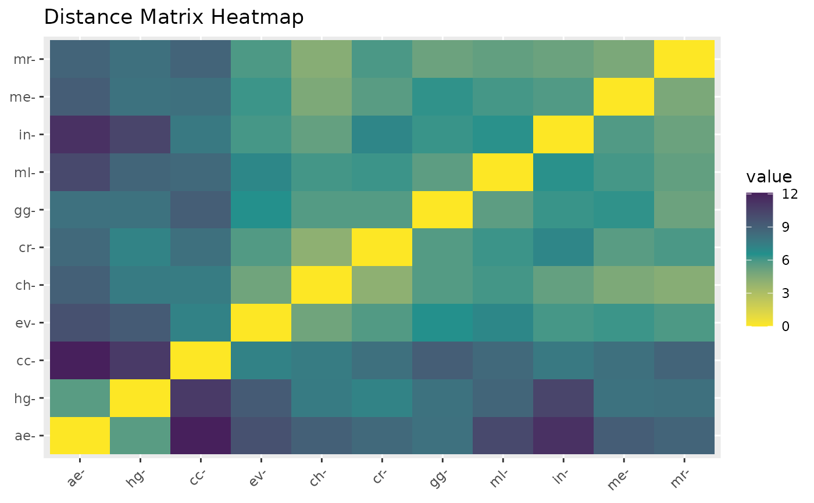

This function compares future climate projections from multiple General Circulation Models (GCMs) based on their similarity in terms of variables. It calculates distance metrics and plots the results on a heatmap.
Usage
dist_gcms(
s,
var_names = c("bio_1", "bio_12"),
study_area = NULL,
scale = TRUE,
method = "euclidean"
)Arguments
- s
A list of stacks of General Circulation Models (GCMs).
- var_names
Character. A vector of names of the variables to compare, or 'all' to include all variables.
- study_area
An Extent object, or any object from which an Extent object can be extracted. Defines the study area for cropping and masking the rasters.
- scale
Logical. Whether to apply centering and scaling to the data. Default is
TRUE.- method
Character. The correlation method to use. Default is "euclidean". Possible values are: "euclidean", "maximum", "manhattan", "canberra", "binary", "minkowski", "pearson", "spearman", or "kendall".
Value
A list containing two items: distances (the calculated distances between GCMs) and heatmap (a plot displaying the heatmap).
Examples
var_names <- c("bio_1", "bio_12")
s <- import_gcms(system.file("extdata", package = "chooseGCM"), var_names = var_names)
study_area <- terra::ext(c(-80, -30, -50, 10)) |> terra::vect(crs="epsg:4326")
dist_gcms(s, var_names, study_area, method = "euclidean")
#> CRS from s and study_area are not identical. Reprojecting study area.
#> $distances
#> ae cc ch cr ev gg hg
#> cc 12.098570
#> ch 8.969913 7.552224
#> cr 8.514195 8.163410 4.086509
#> ev 9.754736 7.253076 4.989154 5.755512
#> gg 8.111254 9.078551 5.713758 5.705027 6.511863
#> hg 5.589097 10.904037 7.580155 7.217513 9.222617 8.074113
#> in 11.336510 7.728264 5.306804 7.057019 6.010795 6.224649 10.381061
#> me 9.123887 8.189250 4.604741 5.604862 6.179877 6.365865 8.078647
#> ml 10.160126 8.502065 6.040417 6.187604 7.007226 5.508376 8.708759
#> mr 8.788592 8.784732 4.298812 5.906397 5.869130 5.112497 8.145027
#> in me ml
#> cc
#> ch
#> cr
#> ev
#> gg
#> hg
#> in
#> me 5.774464
#> ml 6.445012 6.018782
#> mr 5.131127 4.670026 5.373297
#>
#> $heatmap

#>